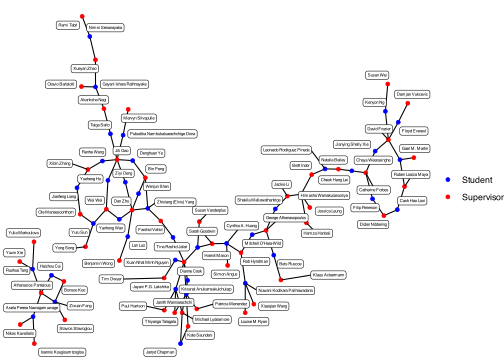

library(tidygraph)
library(ggraph)EBS Department Network
Quarto
R
Network
Graph
Are we all connected in the EBS department at Monash University?
Are we all connected in the EBS department at Monash University?
This started as the question of how far apart PhD students are from each other in the EBS department and so I thought that surely not all students are connected. What I will be doing in this blog post is to represent the relationship between the PhD student and supervisors using a graph structure. Graph structure is made up of nodes and are connected by edges. First, I will treat both students and staff as nodes, and use edges to represent the relationships. This will allows me to see whether the disconnection within the department is presented or not. If the graph is not all connected, I will be able to observed many cluster. However, if we were all connected, one cluster will be observed.
graph <- as_tbl_graph(full) |>
activate(nodes) |>
mutate(status = ifelse(name %in% full$to, "student", "supervisor"))
ggraph(graph, layout = "stress") +
geom_edge_link() +
geom_node_point(aes(color = status)) +
geom_node_label(aes(label = name), size = 1.5, repel = TRUE, label.padding = 0.15) +
scale_color_manual(values = c("blue", "red"),
labels = c("Student", "Supervisor")) +
labs(color = "") +
theme_void()
Surprise! We are all connected. This is a very interesting finding for me since the EBS department has a variety of fields, such as business analytics, econometrics, actuarial science etc. So, who is the connection to us all? If I were to remove Farshid Vahid-Araghi, Elvis Yang’s supervisor, then there would be a total of two clusters; econometrics and business analytics. Given that Farshid has now retired, the EBS department is endangered to be split apart.
Good news. Remember, during the data process, I have talked about the data not being fully accurate. Actually, Betts Ruscoe’s supervisors are Klaus Ackermann and Bonsoo Koo!!. What does this mean? It means even after Elvis Yang submitted his thesis, the new connection between econometrics and business analytics has been established through Betts and her supervisor Bonsoo.
Let’s explore some more details from this dataset. Who has supervised the most students?
full |>
count(from) |>
arrange(-n) |>
head(10) |>
rename(
Supervisors = from,
`Total students` = n) |>
kableExtra::kable()| Supervisors | Total students |
|---|---|
| Dianne Cook | 6 |
| Jiti Gao | 6 |
| Dan Zhu | 5 |
| Athanasios Pantelous | 4 |
| David Frazier | 4 |
| Bin Peng | 3 |
| Catherine Forbes | 3 |
| George Athanasopoulos | 3 |
| Michael Lydeamore | 3 |
| Rob Hyndman | 3 |
To be honest, this is not that of a surprise.
References
Graduate research students and supervisors. (2024, October 21). Monash Business School. https://www.monash.edu/business/research/our-researchers/graduate-research-students-and-supervisors?queries_degree_query_posted=1&queries_degree_query=Econometrics+and+Business+Statistics
Pedersen T (2024). ggraph: An Implementation of Grammar of Graphics for Graphs and Networks. R package version 2.2.1, https://CRAN.R-project.org/package=ggraph.
Pedersen T (2024). tidygraph: A Tidy API for Graph Manipulation. R package version 1.3.1, https://CRAN.R-project.org/package=tidygraph.
Staff directory. (2022, July 4). Monash Business School. https://www.monash.edu/business/econometrics-and-business-statistics/our-people/staff-directory
Wickham H, Averick M, Bryan J, Chang W, McGowan LD, François R, Grolemund G, Hayes A, Henry L, Hester J, Kuhn M, Pedersen TL, Miller E, Bache SM, Müller K, Ooms J, Robinson D, Seidel DP, Spinu V, Takahashi K, Vaughan D, Wilke C, Woo K, Yutani H (2019). “Welcome to the tidyverse.” Journal of Open Source Software, 4(43), 1686. doi:10.21105/joss.01686 https://doi.org/10.21105/joss.01686.
Zhu H (2024). kableExtra: Construct Complex Table with ‘kable’ and Pipe Syntax. R package version 1.4.0, https://CRAN.R-project.org/package=kableExtra.
The question I want to answer is whether all the PhD students in our department are connected or not. The data that will be used to answer this question will be web-scraped from the Monash Website.
This website contains information about graduate research students and supervisors. These are the details all the PhD students were asked to send to the admin team which should be accurate information. However, there are some details I should keep in mind. First, PhD does not regularly send updated details to the admin team. Secondly, PhD supervisors can be changed and that could lead to misinformation. There may be better data kept by the Monash Graduate Research Office, however, that will require a lot of work to obtain. Since the data on the website should still be accurate enough and for time saving I will use the web-scraping to obtain the data.
The download process for the data is as follows:
# Library package
library(tidyverse)
library(rvest)# Function to scrape phd information from a directory page
scrape_phd_info <- function(url) {
# Read the webpage
webpage <- xml2::read_html(url)
# Find all phd heading elements
heading_elements <- webpage %>%
html_elements("h3.box-listing-element__heading")
# Find all description elements
description_elements <- webpage %>%
html_elements("p.box-listing-element__description")
# Initialize an empty dataframe to store results
phd_data <- data.frame(
url = character(),
phd_name = character(),
supervisor = character(),
stringsAsFactors = FALSE
)
# For each heading element, find corresponding description and extract information
for (i in 1:length(heading_elements)) {
# Get the phd name
phd_name <- html_text(heading_elements[i], trim = TRUE)
# Try to find corresponding description element
if (i <= length(description_elements)) {
description_text <- html_text(description_elements[i], trim = TRUE)
# Extract text after "Supervisors:" if it exists
if (grepl("Supervisors:", description_text)) {
# Extract the supervisors text
supervisors_text <- str_extract(description_text, "(?<=Supervisors:).*")
supervisors_text <- trimws(supervisors_text)
# Split supervisors by comma, semicolon, or "and"
supervisors_list <- strsplit(supervisors_text, "\\s*[,;]\\s*|\\s+and\\s+")[[1]]
supervisors_list <- trimws(supervisors_list)
# Create one row per supervisor
for (supervisor in supervisors_list) {
if (nchar(supervisor) > 0) {
phd_data <- rbind(
phd_data,
data.frame(
phd_name = phd_name,
supervisor = supervisor,
stringsAsFactors = FALSE
)
)
}
}
} else {
# Add a row with NA for supervisor if none found
phd_data <- rbind(
phd_data,
data.frame(
phd_name = phd_name,
supervisor = NA,
stringsAsFactors = FALSE
)
)
}
}
}
return(phd_data)
}
url <- as.vector(glue::glue("https://www.monash.edu/business/research/our-researchers/graduate-research-students-and-supervisors?queries_degree_query=Econometrics+and+Business+Statistics&queries_degree_query_posted=1&result_1619149_result_page={a}",
a = c("1", "2", "3", "4")))
for (i in seq_along(url)) {
download.file(url[i],
destfile = paste0("data/page", i, ".html"),
quiet = TRUE)
}
file <- glue::glue("data/page{a}.html", a = c("1", "2", "3", "4"))
results <- do.call(rbind, lapply(file, scrape_phd_info)) |>
rename(from = supervisor,
to = phd_name)
save(results, file = "data/supervisors.Rdata")
extract_team_names <- function(url) {
# Read the webpage
webpage <- xml2::read_html(url)
# Create empty lists to store results
leadership_names <- list()
academic_names <- list()
# Find Leadership Team section
leadership_section <- webpage %>%
html_elements("h2:contains('Leadership team')") %>%
html_element(xpath = "following-sibling::*")
# Extract names from leadership section (adjusting selector as needed)
# This assumes the names are in links right after the h2
if (length(leadership_section) > 0) {
leadership_names <- leadership_section %>%
html_elements("a") %>%
html_text() %>%
trimws()
}
# Find Academic Staff section
academic_section <- webpage %>%
html_elements("h2:contains('Academic staff')") %>%
html_element(xpath = "following-sibling::*")
# Extract names from academic section
if (length(academic_section) > 0) {
academic_names <- academic_section %>%
html_elements("a") %>%
html_text() %>%
trimws()
}
# Create a results list
results <- list(
leadership_team = leadership_names,
academic_staff = academic_names
)
return(results)
}
download.file("https://www.monash.edu/business/ebs/our-people/staff-directory", destfile = "data/main.html", quiet = TRUE)
main <- extract_team_names("data/main.html") |>
unlist() |>
as_tibble() |>
rename(supervisor = value) |>
filter(!str_detect(supervisor, "@monash.edu"))
save(main, file = "data/main.Rdata")I start by first downloading the HTML page from the Monash website, then scrape PhD name using the h3 tags with the box-listing-element__heading class and p tags with the box-listing-element__description class for details. Since we only care about the supervisor’s name, I then use regex to extract that. Next, to cross-reference with the supervisor’s name I have also web-scraped all the EBS staff from the Monash Website. Now, the dataset has to be in a tidy data format which will make it easier for me to do an analysis.
library(fuzzyjoin)
load("data/supervisors.Rdata")
load("data/main.Rdata")
full <- results |>
mutate(from = str_remove(from, "Prof |A/Prof |Dr |Prof. |Dr. |Assoc Prof. |Professor ")) |>
stringdist_left_join(main,
by = c("from" = "supervisor"),
max_dist = 2) |>
mutate(supervisor = ifelse(is.na(supervisor), from, supervisor)) |>
mutate(supervisor = case_when(
supervisor == "David T. Frazier" ~ "David Frazier",
supervisor == "Di Cook" ~ "Dianne Cook",
supervisor == "Farshid Vahid-Araghi" ~ "Farshid Vahid",
supervisor == "Susan VanderPlas" ~ "Susan Vanderplus",
supervisor == "Thiyanga S. Talagala" ~ "Thiyanga Talagala",
.default = supervisor
)) |>
select(to, supervisor) |>
rename(from = supervisor)To make it easier, I have removed the title from the EBS staff. Then I use the stringdist_left_join to join any staff name that is very close in terms of character distance. However, after going through all of that there are still some staff names with large distances so I have to manually fix them. One comment about the string distance is that, yes, I could have increased the threshold, but, that could also lead to a mismatch.
References
Graduate research students and supervisors. (2024, October 21). Monash Business School. https://www.monash.edu/business/research/our-researchers/graduate-research-students-and-supervisors?queries_degree_query_posted=1&queries_degree_query=Econometrics+and+Business+Statistics
Robinson D (2020). fuzzyjoin: Join Tables Together on Inexact Matching. R package version 0.1.6, https://CRAN.R-project.org/package=fuzzyjoin.
Staff directory. (2022, July 4). Monash Business School. https://www.monash.edu/business/econometrics-and-business-statistics/our-people/staff-directory
Wickham H, Averick M, Bryan J, Chang W, McGowan LD, François R, Grolemund G, Hayes A, Henry L, Hester J, Kuhn M, Pedersen TL, Miller E, Bache SM, Müller K, Ooms J, Robinson D, Seidel DP, Spinu V, Takahashi K, Vaughan D, Wilke C, Woo K, Yutani H (2019). “Welcome to the tidyverse.” Journal of Open Source Software, 4(43), 1686. doi:10.21105/joss.01686 https://doi.org/10.21105/joss.01686.
Wickham H (2024). rvest: Easily Harvest (Scrape) Web Pages. R package version 1.0.4, https://CRAN.R-project.org/package=rvest.
I would like to acknowledge the use of AI for generating the web-scraping script. However, I have already deleted the chat log, thus, I accept the deduction for this.